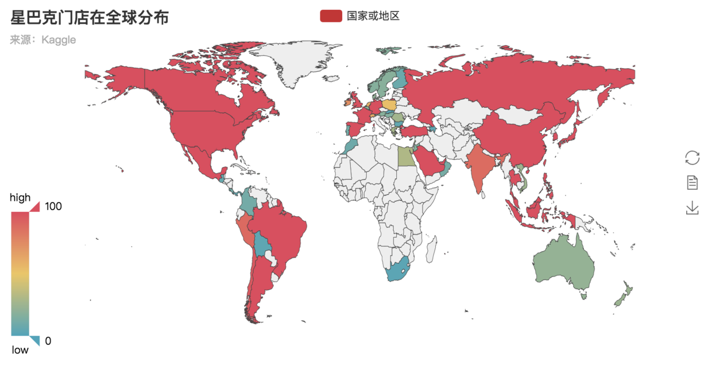
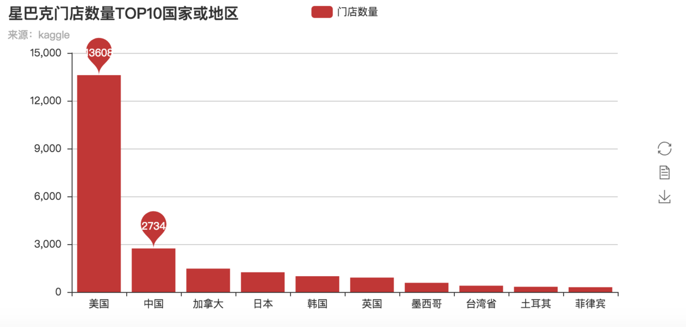
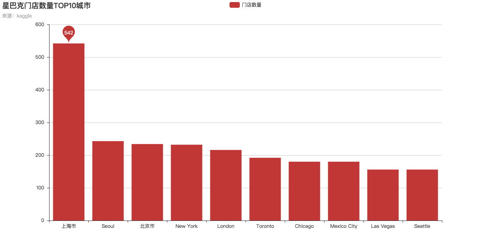
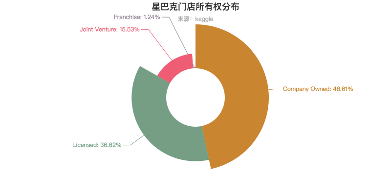
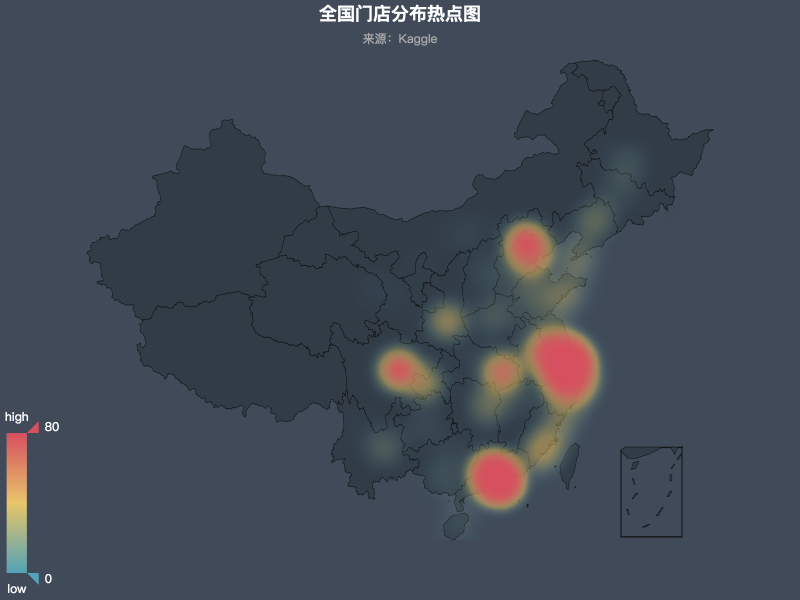

使用pyecharts对星巴克门店分布进行可视化分析：
该数据集来源Kaggle，囊括了截至2017/2月份全球星巴克门店的基础信息，其中包括品牌名称、门牌地址、所在国家、经纬度等一系列详细的信息。
| 字段名称 | 类型 | 解释说明 |
|---|---|---|
| Brand | Object | 品牌名称，数据字典中包含了星巴克旗下的子品牌 |
| Store Number | Object | 门店编号，独立且唯一 |
| Store Name | Object | 门店名称，示例：“北京建国门内大街店” |
| Ownership Type | Object | 门店所有权类型，如：Company Owned |
| Street Address | Object | 门店所在的街道地址 |
| City | Object | 门店所在的城市名称 |
| State/Province | Object | 门店所在的省份地区 |
| Country | Object | 门店所在的国家或地区，如：US，代表美国 |
| Postcode | Object | 门店所在地址的邮政编码 |
| Phone Number | Object | 门店的联系电话 |
| Timezone | Object | 门店所在地的时区 |
| Longitude | Float64 | 门店地址的经度 |
| Latitude | Float64 | 门店地址的纬度 |
import pyecharts
import pandas as pd
import warnings
warnings.filterwarnings("ignore")
data = pd.read_csv('directory.csv')
#读取文件
Country = pd.read_csv('Country.csv')
#用于替换星巴克门店信息中Country字段简写
data = pd.merge(data,Country,left_on='Country',right_on='国际域名缩写',how = 'left')temp = data.groupby('Countries and Regions')['Brand'].count().reset_index()
temp.columns = ['国家或地区','计数']
Map = pyecharts.Map("世界地图 - 不带标记点")
Map.add("国家或地区",temp['国家或地区'], temp['计数'], maptype="world", is_visualmap=True,style='heatmap',
is_map_symbol_show=False, visual_text_color='#000')
Map
temp = data.groupby('City')['Brand'].count().reset_index()
temp = temp.nlargest(10,'Brand')
temp.columns = ['城市','计数']
bar = pyecharts.Bar("星巴克门店数量TOP10城市", "来源：kaggle",width=1200,height=600)
bar.add("门店数量", temp['城市'], temp['计数'],mark_point=['max'])
bar
temp = data.groupby('City')['Brand'].count().reset_index()
temp = temp.nlargest(10,'Brand')
temp.columns = ['城市','计数']
bar = pyecharts.Bar("星巴克门店数量TOP10城市", "来源：kaggle",width=1200,height=600)
#bar.use_theme('vintage')
bar.add("门店数量", temp['城市'], temp['计数'],mark_point=['max'])
bar
这个需要提前解释一下，目前星巴克门店的经营方式氛围如下4类：
temp = data.groupby('Ownership Type')['Brand'].count().reset_index()
temp = temp.nlargest(10,'Brand')
temp.columns = ['Ownership Type','计数']
chart = pyecharts.Pie("星巴克门店所有权分布", "来源：kaggle", title_pos='center')
chart.add("占比", temp['Ownership Type'], temp['计数'], is_random=True,
radius=[30, 75], rosetype='radius',
is_legend_show=False, is_label_show=True)
chart
temp = data[data['Country']=='CN'].groupby('City')['Brand'].count().reset_index()
#防坑，门店信息中城市格式不统一,无法使用pyecharts自带的经纬度，自定义添加门店文件自带的经纬度
position = dict(zip(data['City'].values,data[['Longitude','Latitude']].values.tolist()))
chart = pyecharts.Geo("全国门店分布热点图", "来源：Kaggle", title_color="#fff", title_pos="center",
width=800, height=600, background_color='#404a59')
chart.add("", temp['City'], temp['Brand'], visual_range=[0, 80], type='heatmap',
visual_text_color="#fff", is_visualmap=True,is_legend_show=False,
geo_cities_coords = position)
chart
| 城市 | 数量 |
|---|---|
| 上海市 | 542 |
| 北京市 | 234 |
| 杭州市 | 117 |
| 深圳市 | 113 |
| 广州市 | 106 |
| 香港 | 104 |
| 成都市 | 98 |
| 苏州市 | 90 |
| 南京市 | 73 |
| 武汉市 | 67 |
| 宁波市 | 59 |
| 天津市 | 58 |
| 重庆市 | 41 |
| 无锡市 | 40 |
| 西安市 | 40 |
| 佛山市 | 33 |
| 东莞市 | 31 |
| 厦门市 | 31 |
| 青岛市 | 28 |
| 常州市 | 26 |
总体来说，星巴克门店主要还是分布在发达国家和地区，当然也与不同国家地区的文化有关，我们还是不能武断地因为哪个城市，哪个国家星巴克更多就断定更发达。
另外echarts是由百度团队开发的JavaScript可视化图表库，目前python中可以直接通过pyecharts调用，除了丰富的图表还具有传统图表不具有的交互性，强烈推荐各位使用。
---
skr～skr～～～